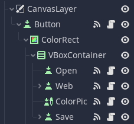

Фотоколлаж
Фотоколлаж – наложение одного изображения на другое, или совмещение нескольких фотоизображений в одном. Давайте сделаем программу, в которой можно было бы создать хоть и простой, но всё же фотоколлаж. Сложных решений в виде бесконечных холстов с масштабированием делать не будем – при наличии должной фантазии и возникновения фактора срочной необходимости можно будет доработать решение самостоятельно, либо переработать ради улучшения функционала и расширения программы. Создадим достаточно простое, но рабочее решение.
Создаём новый проект, в новом проекте создаём новую 2d сцену, сразу сохраняем сцену чтобы при запуске выбрать её по умолчанию. Что хочется сделать:
- Изменение цвета фона;
- Добавление картинки с диска;
- Добавление картинки с сети интернет;
- Масштабирование, поворот и перемещение изображения;
- Сохранение результата работы пользователя в виде изображения.
Для создания меню подойдёт узел «MenuButton», через который при помощи «add_item()» можно добавлять элементы в список, и через сигналы связывать их с необходимым функционалом (теперь, когда есть знание что такое присутствует – воспользоваться этим не будет проблемой). Мы же создадим своё меню (как это обычно делают в играх, наподобие главного меню игры). Делать мы это на узле «CanvasLayer», так как данный узел предназначен для отрисовки на экране поверх всех объектов вне зависимости от его расположения на дереве сцены.
Для создания такого меню мы сделаем одну кнопку, которая будет раскрывать одну из ветвей дерева сцены. Добавьте следующие объекты иерархически: «CanvasLayer», «Button» (в качестве обозначения назначения кнопки задайте ей текст «Menu»), «ColorRect», «VBoxContainer». В VBoxContainer добавляем четыре кнопки, одна из которых является узлом «ColorPickerButton». Структура иерархии должна быть похожа на структуру, представленную на изображении справа. Во вьюпорте расположите Button где-нибудь в углу. Меню, вызываемой данной кнопкой, а именно узел ColorRect переместите ближе к кнопке, настройте его ширину и высоту под вложенный список. Обратите внимание что «VBoxContainer» как раз существует для того, чтобы выровнять элементы, и расположить последовательно вертикально. Также после настройки «ColorRect» перенесите на него «VBoxContainer». Так как мы сделали «VBoxContainer» дочерним по отношению к «ColorRect», то он будет перенимать некоторые трансформации у родительского узла, и изменять своё поведение при изменении поведения родительского узла.
Теперь надо сделать скрипт на раскрытие и скрытие меню. Для этого в «Button» присоединяем скрипт, и соединяем сигнал кнопки с её же скриптом. В присоединённом сигнале мы добавим всего одну строку:
func _on_Button_pressed():
$ColorRect.visible = not $ColorRect.visible
Строчка, как видите, проста – при нажатии параметр скрытости равен его собственному отрицанию.
Перейдём к ColorPickerButton, и для неё создадим скрипт. Так же привяжем её сигнал color_changed() к ней же самой, и добавим ещё строчку кода в нашу программу.
func _on_ColorPickerButton_color_changed(color):
VisualServer.set_default_clear_color(color)
Здесь весь трюк в том, что мы обращаемся к VisualServer – сервер для всего видимого. На нём происходит весь процесс рендеринга пространства. Всё, от отрисовки спрайтов до теней и сглаживания картинки работает на нём. В том числе он отвечает за отрисовку фонового цвета, который мы и заменяем этой строкой. Ну а теперь стоит попробовать добавить изображение. У нас два варианта – подгрузить изображение из сети, или загрузить с диска.
Для загрузки файла с диска нам потребуется в любое место добавить узел «FileDialog», отобразить его и растянуть во вьюпорте. Устанавливаем для него режим открытия файла, и задаём формат открываемых файлов «*.png» (фильтрацию Форматов мы задавали ранее при создании музыкального плеера, когда выбирали загружаемые аудиоформаты). Устанавливаем «Mode» – «Open File», «Access» – «File System». Теперь для кнопки «Open» создадим скрипт, куда привязываем нажатие кнопки. По нажатию кнопки указываем узел «File Dialog» перетащив его из дерева сцены в код, и вызовем его метод popup(). У меня это получилось вот так:
func _on_Open_pressed():
$"../../FileDialog".popup()

Сигнал «FileDialog» - «file_selected()» привязываем к кнопке для того, чтобы сделать добавление картинки. Вспомним, что картинка должна поворачиваться, масштабироваться и перемещаться. И так, для «Node2D» добавляем узел «Control», куда добавим узел «Sprite». Рядом с ним, как и в случае ранее, добавим узлы «ColorRect» и «VBoxContainer» для создания меню, которые растягиваем уже относительно того узла, в который они помещены. В него я поместил:
- «ToolButton» – для возможности переноса картинки.
- «Label» с именем и текстом «Rotation»
- «HSlider» - для обозначения поворота. Для данного слайдера в инспекторе изменим значения «MinValue» и «MaxValue» значения -180, и 180 соответственно.
- «Label» с именем и текстом «Scale»
- «HSlider» - для обозначения масштабирования. Для него мы зададим максимальное значение – 4, а «Step» - 0.01.
- «Button» - для возможности удаления картинки.
Для узла «Sprite» создадим скрипт, в котором опишем появление и исчезание меню. В созданном скрипте с зажатой клавишей «ctrl» кликнем на текст «Sprite» в первой строчке, после слова «extends» - нас перекинет в документацию узла «Sprite». Пролистав документацию в самый низ можно увидеть описание метода get_rect(). В данном методе продемонстрирован фрагмент кода показывающий, как при помощи событий устройств ввода (конкретно используя клик мыши) определить соответствие клика мыши координатам, в которых находится спрайт. Я скопировал его, и лишь немного изменил таким образом, чтобы он отображал наше меню при клике на спрайт, и скрывал при клике за его пределами, либо при нажатии кнопки «Escape». Также я соединил сигнал кнопки удаления с этим же скриптом спрайта, указав удаление родительского узла, в котором существует наша конфигурация:
func _input(event):
if event is InputEventMouseButton:
if event.pressed and event.button_index == BUTTON_LEFT:
if get_rect().has_point(to_local(event.position)):
$"../VBoxContainer".visible = true
$"../ColorRect".visible = true
else:
$"../VBoxContainer".visible = false
$"../ColorRect".visible = false
elif Input.is_key_pressed(KEY_ESCAPE):
$"../VBoxContainer".visible = false
$"../ColorRect".visible = false
func _on_delete_pressed():
get_parent().queue_free()
Для каждого из слайдеров создаём скрипты, и присоединяем их сигналы drag_started() и drag_ended() к их собственным скриптам. Содержание у них примерно одинаковое:
extends HSlider
onready var sprite = $"../../image" # указываем наш спрайт с которым будем работать
var dragged = false # указываем флаг, отвечающий за модивикацию параметров в методе update()
func _ready():
value = sprite.rotation_degrees # задаём начальное значение слайдера
func _physics_process(delta):
if dragged:
sprite.rotation_degrees = value # отличительная строка (поворот в градусах)
func _on_HSlider_drag_started(): # изменяем флаг в зависимости от
dragged = true
func _on_HSlider_drag_ended(value_changed):
dragged = false
Единственная строка, которая помечена как отличительная, для масштабирующего слайдера будет изменена на соответствующий функционал:
sprite.scale = Vector2(value, value)
И нам остаётся только перенос. «ToolButton» также должен быть обеспечен скриптом, к которому присоединены button_up() и button_down() этого же узла. Мы также создадим флаг dragged для обозначения необходимости перетаскивания объекта в каждом кадре, и будем к позиции прибавлять координаты мыши, от которых будем отнимать координаты мыши в предыдущем кадре:
extends ToolButton
var dragged = false
var mousepos
var prevPos
# Called when the node enters the scene tree for the first time.
func _ready():
pass # Replace with function body.
func _physics_process(delta):
if dragged:
mousepos = get_global_mouse_position()
$"../..".rect_position.x -= prevPos.x - mousepos.x
$"../..".rect_position.y -= prevPos.y - mousepos.y
prevPos = mousepos
func _on_ToolButton_button_down():
prevPos = get_global_mouse_position()
dragged = true
func _on_ToolButton_button_up():
dragged = false
После того как всё сделано мы можем запечатать узел отвечающий за изображение в сцену. В Godot всё завязано на сценах, в том числе некоторые узлы мы можем запечатать как сцены – правый клик мыши на узле «Control», - «Сохранить ветку как сцену», - задайте имя сцены, и сохраните. Теперь, когда мы приготовились, сохранённую ветку «Control» можно удалить из сцены, мы ей воспользуемся в коде кнопки открытия, на сигнале выбора файла:
var picture = preload("res://SpritePrefab.tscn") # в скобках указываем путь до своей сцены которую сохранили шагом ранее.
func _on_FileDialog_file_selected(path):
var img = Image.new() # создаём узел изображения
img.load(path) # загружаем картинку с диска в узел
var texture = ImageTexture.new() # создаём узел текстуры
texture.create_from_image(img) # создаём данные текстуры из изображения
var picScene = picture.instance() # объект сцены содержащей картинку
# так как мы заинстансили сцену в предыдущей строке – она уже является ветвью дерева сцены.
picScene.get_child(0).texture = texture # в картинку дочерней сцены загружаем текстуру
$"../../../../..".add_child(picScene) # Добавляем загруженную дочернюю сцену в нашу сцену.
Запускаем, тестируем. Если всё работает, продолжим дальше, и, сделаем загрузку изображений из интернета.
Чтобы загрузить изображение из интернета – необходимо программе хотя бы указать картинку, которую мы желаем загрузить. Самый привычный способ – ссылка на адрес изображения в интернете. Для того чтобы ссылку было куда вставить – сделаем такое поле. Для кнопки «Web» добавим дочерним узлом «ColorRect», в который добавим узлы «LineEdit», «Button», и «HTTPRequest».
Узел «HTTPRequest» — это самый простой способ выполнения HTTP-запросов в Godot. Он поддерживается более низкоуровневым HTTPClient, для которого есть отдельная тема в документации.
Всё что сейчас нам нужно – добавить узлы, и расставить их в середине экрана подобным образом:
Для кнопки «Web» создаём скрипт, и присоединяем к ней её же сигнал нажатия, и сигнал отправки запроса в панели, которую мы только что сделали. По нажатию на кнопку «Web» нам необходимо всего лишь показать нашу панель, а при нажатии кнопки панели необходимо скрыть панель, задать адрес для узла «HTTPRequest», и сделать запрос в сеть следующим образом:
var picture = preload("res://SpritePrefab.tscn") # не забудьте предзагрузить сену для спрайта в скрипте, чтобы иметь возможность поместить на холст добавленную картинку
func _on_Web_pressed():
$ColorRect.visible = true
func _on_Button_pressed():
$ColorRect/HTTPRequest.request($ColorRect/LineEdit.text)
«HTTPRequest» устроен таким образом, что позволяет не тормозить процесс исполнения всей программы. Он не может позволить присвоить результат запроса в переменную – само ожидание ответа для занесения в переменную будет тормозить рабочий процесс игры/приложения. Поэтому он также после выполнения запроса отправляет сигнал (request_completed()), который мы должны обработать. Найдите этот сигнал и присоедините его к скрипту кнопки «Web». Код не особо будет отличаться за исключением пары нюансов:
- Необходимо проверить формат загружаемой картинки;
- Картинку открывать с диска при помощи дополнительных функций нет необходимости – она будет присутствовать в теле ответа.
Поэтому мы скопируем код кнопки открытия картинки, и откорректируем его с учётом изменений, добавив туда также скрытие панели адреса:
func _on_HTTPRequest_request_completed(result, response_code, headers, body):
var img = Image.new()
if ".jpg" in $ColorRect/LineEdit.text:
img.load_jpg_from_buffer(body)
elif ".bmp" in $ColorRect/LineEdit.text:
img.load_bmp_from_buffer(body)
elif ".png" in $ColorRect/LineEdit.text:
img.load_png_from_buffer(body)
var texture = ImageTexture.new()
texture.create_from_image(img)
var pictureScene = picture.instance()
pictureScene.get_child(0).texture = texture
$"../../../../..".add_child(pictureScene)
$ColorRect.visible = false
Проверьте. Если картинка загружается из интернета и добавляется на сцену как это было с открытием картинки из файла, то мы на верном пути, и нам остаётся сделать только сохранение результата работы пользователя – скриншот программы.
Для кнопки «Save» создайте скрипт (совсем не страшно что в каждом объекте будет храниться отдельный скрипт, либо будет дублироваться чей-либо из файлов проекта – как минимум движок на это рассчитан, и нарушений здесь быдь не может). По нажатию кнопки «Save» пользователь должен выбрать путь до файла - добавьте для сцены ещё один «FileDialog» указав ему режим «Save», и добавив в фильтры формат «*.png», и опишите его вызов вместе с сокрытием нашего меню при помощи переключения видимости «CanvasLayer». Обратите внимание, что чтобы FileDialog оставался видимым – его необходимо вынести за пределы «CanvasLayer», иначе он будет скрываться вместе с ним. Также присоединяем сигналы «file_selected()» и «popup_hide()» к скрипту кнопки сохранения – во избежание казусов мы воспользуемся весьма интересной техникой. Для того чтобы в момент выбора файла спрайты не кликались, а оставались в том же состоянии на момент, когда файлдиалог был вызван – мы будем ставить «игру» на паузу. Для этого также выберем наш файлдиалог, и в инспекторе, прокрутив вниз, увидим несколько интересных пунктов в конце.
- Editor Description – можно для какого-либо узла задать описание, чтобы в следующий раз можно было быстро вспомнить для чего он был нужен;
- Pause Mode – режим паузы. При постановке игры на паузу Godot фактически останавливает обработку узлов, включая их скрипты. Доступно три режима:
- Inherit – наследование состояния от узла-родителя (вне зависимости от уровня родителя, натыкается на первое чётко определённое состояние как «Stop» или «Process» в своей ветке. Если вся ветвь использует наследование – по умолчанию работает «Stop»);
- Stop – полностью останавливает узел несмотря ни на что;
- Process – полная обработка узла.
- Physics Interpolation – одна из самых базовых операций в программировании графики. Будет неплохо с ней ознакомиться отдельно, дабы расширить Ваши горизонты как разработчика графики:
- Inherit - наследование;
- Off - отключить интерполяцию;
- On - включить интерполяцию физики;
- Process priority – приоритет обработки узла в порядке включённых вызовов обработки. Узлы, у которых значение приоритета ниже, сначала выполнят свои обратные вызовы обработки;
- Script – присоединённый к узлу скрипт.
Исходя из данной ин6формации необходимо для «FileDialog» и «CanvasLayer» изменить режим паузы на «Process» (Важно! Для объекта, стоящего на паузе не обрабатываются также скрипты, а значит остановленный узел не способен заставить игру даже выйти из режима паузы). Теперь, когда всё сделано, напишем скрипт сохранения:
var filepath = "" # зададим глобально для данного узла переменную пути файла
func _on_Save_pressed():
$"../../..".visible = false # скрываем меню
$"../../../../FileDialog".popup() # вызываем окно выбора файла
get_tree().paused = true # ставим игру на паузу
# задаём путь файла на случай если файл был выбран
func _on_FileDialog_file_selected(path):
filepath = path
# в любом случае при скрытии окна выполняем действия
func _on_FileDialog_popup_hide():
$Timer.start() # откуда взялся таймер??? О_о
# по истечению таймера сделать скриншот и сохранить, но… Какого таймера??? О_о
func _on_Timer_timeout():
if filepath != "": # мы будем сохранять в случае, если файл был выбран, а значит переменная пути файла не пуста
var image = get_viewport().get_texture().get_data() # получаем текстуру вьюпорта – всё, что отображается в игре на текущий момент
image.flip_y() # так получилось, что текстура по умолчанию кверх ногами
image.save_png(filepath) # сохраняем нашу картинку по выбранному пути
filepath = "" # обнуляем путь
get_tree().paused = false # вернём паузу прежде, чем захотим вернуть всё на место
$"../../..".visible = true # возвращаем видимость объекта
Какой ещё таймер?! Откуда таймер?!
Всё просто. Окно выбора файла отправляет сигнал при скрытии, а это значит, что сперва будет отправлен сигнал, он будет обработан, картинка сохранена, и только потом окно выбора файла скроется – картинка будет сохранена с видимым окном выбора файла. Для того чтобы окно как-то скрылось необходимо хотя бы обновить кадр, а для этого понадобится фактически просто пропустить исполнение скрипта, и выполнить его позже. Поэтому нам необходимо сделать некоторую задержку. Именно поэтому я добавил узел «Timer» с периодом в 0.05 секунды в кнопку сохранения. Итог получился следующий:
И теперь можно проверять, ведь наша программа для создания простых фотоколлажей готова! Внесите самостоятельно некоторые коррективы:
- Для открытия файла с диска добавьте ещё пару форматов, чтобы можно было загружать картинки с расширениями jpg и bmp.
- «Оптимизируйте!» - Попробуйте реализовать диалоговые окна и таймер из кода, чтобы они не были видны в дереве сцены и занимали память и время обработки сцены исключительно в случае необходимости их использования.